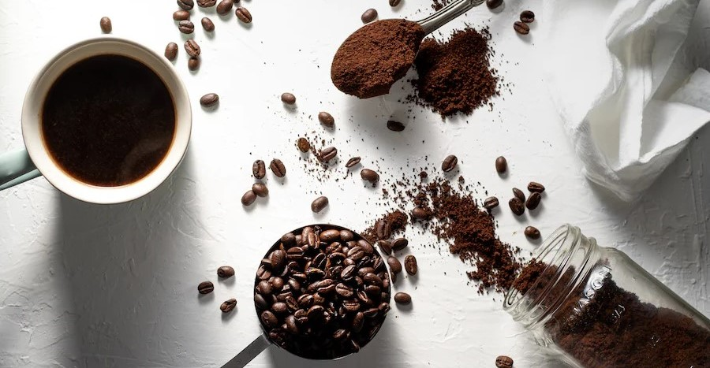
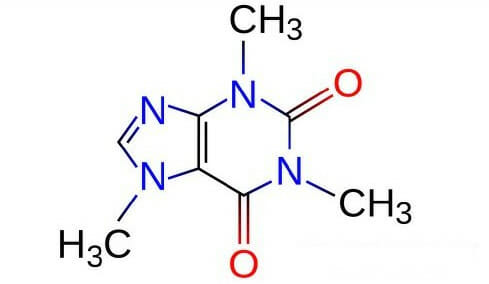

카페인의 모든 것
카페인의 섭취량이 증가하고 있는 지금, 카페인에 대해 살펴 보겠습니다.
카페인은 자연적으로 여러 식물에서 발견되는 화학 물질로 주로 커피, 차, 초콜릿, 콜라 등의 음료나 식품에 함유되어 있습니다.
이는 중추 신경계를 자극하는 효과를 가지며, 많은 사람들이 활기를 끌어내는 목적으로 소비합니다.
카페인의 주요 효과 및 특징
- 각성 및 기능 향상: 카페인은 중추 신경계를 자극하여 잠을 깨우고 각성 상태를 유지하는데 도움을 줄 수 있습니다. 이로 인해 집중력, 기억력, 인지 능력 등이 일시적으로 향상될 수 있습니다.
- 수용성: 카페인은 신체에 빠르게 흡수되며, 효과는 일반적으로 섭취 후 15분에서 1시간 사이에 나타납니다. 그러나 이 효과는 개인에 따라 다르며, 자주 섭취하면 더 높은 내성이 생길 수 있습니다.
- 중독성: 카페인은 심리적 및 생리적 중독성을 가질 수 있습니다. 지나친 섭취나 긴 시간 동안 지속적인 소비는 체내 카페인 농도를 높이고 중독 증상을 유발할 수 있습니다. 중독 증상에는 두통, 피로감, 집중력 저하 등이 포함될 수 있습니다.
- 수면 영향: 카페인은 수면에 부정적인 영향을 줄 수 있습니다. 수면 장애를 유발하거나 수면의 질을 저하시킬 수 있으며, 밤에 카페인을 섭취하면 잠들기 어려워질 수 있습니다.
- 생리학적 영향: 카페인은 심박수를 증가시키고 혈압을 일시적으로 상승시킬 수 있습니다. 또한 소화기관에도 영향을 미칠 수 있어 위산 분비를 촉진시키거나 변비를 유발할 수 있습니다.
- 기타 영향: 일부 연구는 카페인이 항산화 작용을 하거나 뇌혈관 질환, 당뇨병, 파킨슨병 예방에 일부 도움을 줄 수 있다고 제안하기도 합니다. 그러나 이러한 영향에 대해서는 아직 더 많은 연구가 필요합니다.
카페인의 섭취는 개인에 따라 다르며, 미량의 카페인은 각성 효과를 누리면서도 건강에 부정적인 영향을 미치지 않을 수 있습니다. 그러나 과도한 카페인 소비는 건강 문제를 유발할 수 있으므로 적절한 섭취량을 유지하는 것이 중요합니다.
화학 구조
- 카페인은 알칼로이드로 대부분 질소 원자를 함유하고 있습니다. 모르핀과 니코틴도 일반적인 알칼로이드입니다.
순수한 카페인은 트리메틸잔틴으로도 알려져있으며 수용성이 높습니다. 녹는점은 238도 이며 카페인은 냄새가 없지만 맛이 매우 씁쓸합니다.
카페인과 인체의 상호 작용
- 카페인은 간에서 대사되어 테오필린, 테오브로민, 파라크산틴으로 분해됩니다. 200mg 용량의 카페인은 완전히 대사되는데 약 40시간이 걸립니다.
또한, 카페인의 가장 큰 효과는 섭취 후 처음 4~6시간 동안 경험됩니다.
카페인 함량
- 카페인은 각성제이기 때문에 안전한 수준으로 유지해야 합니다. 카페인의 안전한 양은 개인의 내성, 민감도, 체중, 연령 및 건강 이력에 따라 달라질 수 있습니다.
- 건강한 성인: 하루 300-400mg
- 어린이(13-18): 하루 100mg
- 어린이(12세 미만): 없음, 그러나 체중 1kg당 3mg을 초과해서는 안 됩니다.
- 임산부: 하루 100-200 mg 이하.
음식과 음료의 카페인
원래 카페인은 자연적으로 카페인을 함유한 식물 부위의  섭취를 통해서만 섭취되었지만, 식품 과학자들은 모든 종류의 음료와 식품에 첨가제로 카페인을 합성하기 시작했습니다.
우리 데이터베이스 에 따르면 일정 수준의 카페인을 함유한 800개 이상의 제품이 있으며 전 세계적으로 아직 추가되지 않은 제품이 더 많습니다.
섭취를 통해서만 섭취되었지만, 식품 과학자들은 모든 종류의 음료와 식품에 첨가제로 카페인을 합성하기 시작했습니다.
우리 데이터베이스 에 따르면 일정 수준의 카페인을 함유한 800개 이상의 제품이 있으며 전 세계적으로 아직 추가되지 않은 제품이 더 많습니다.
일반적으로 카페인은 커피와 차 기반 음료 및 제품, 초콜릿 기반 음료 및 제품, 탄산음료, 에너지 음료, 에너지 샷, 진통제 및 운동 보충제를 포함한 다양한 보충제에서 발견 됩니다 . FDA 와 같은 대부분의 식품 관리 기관은 커피나 차와 같은 천연 성분을 함유한 식품의 라벨에 해당 제품에 카페인이 함유되어 있음을 표시하도록 요구하지 않지만 , 첨가된 카페인은 제품 라벨에 표시해야 합니다.
그러나 대부분의 식품 관리 기관에서는 제품 라벨에 카페인 함량을 표시하도록 요구하지 않습니다 . 많은 회사들이 자사 제품에 함유된 카페인 함량을 라벨에 자발적으로 공개하기 시작했으며 이러한 추세는 계속될 것으로 예상됩니다.